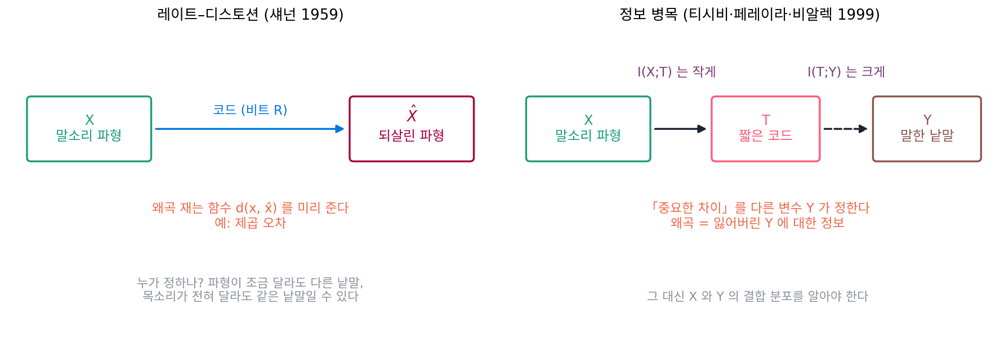
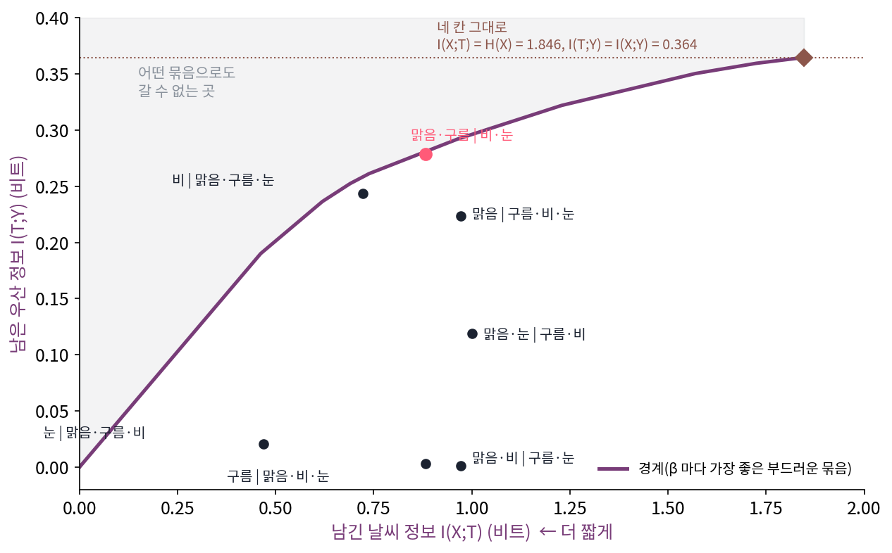
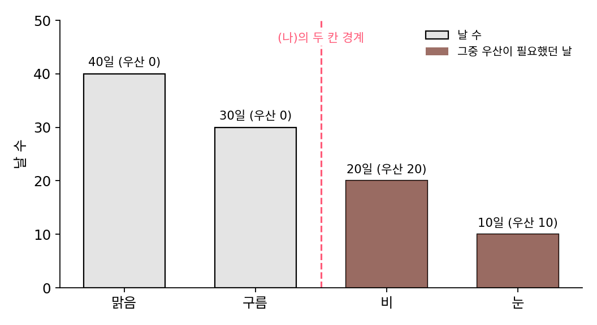
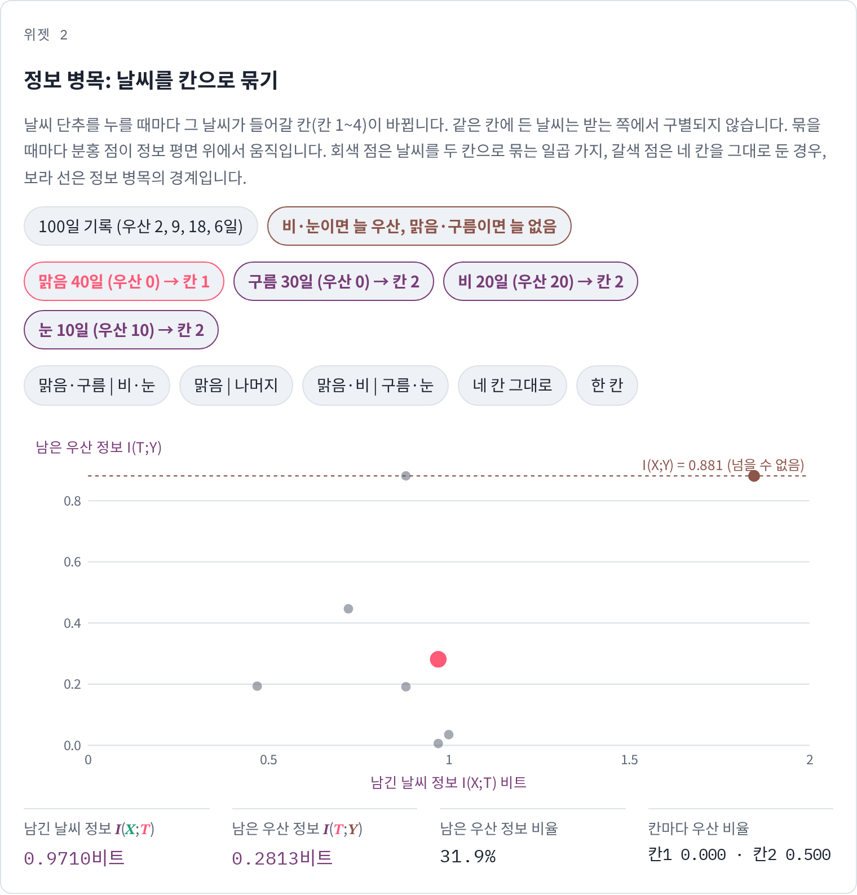
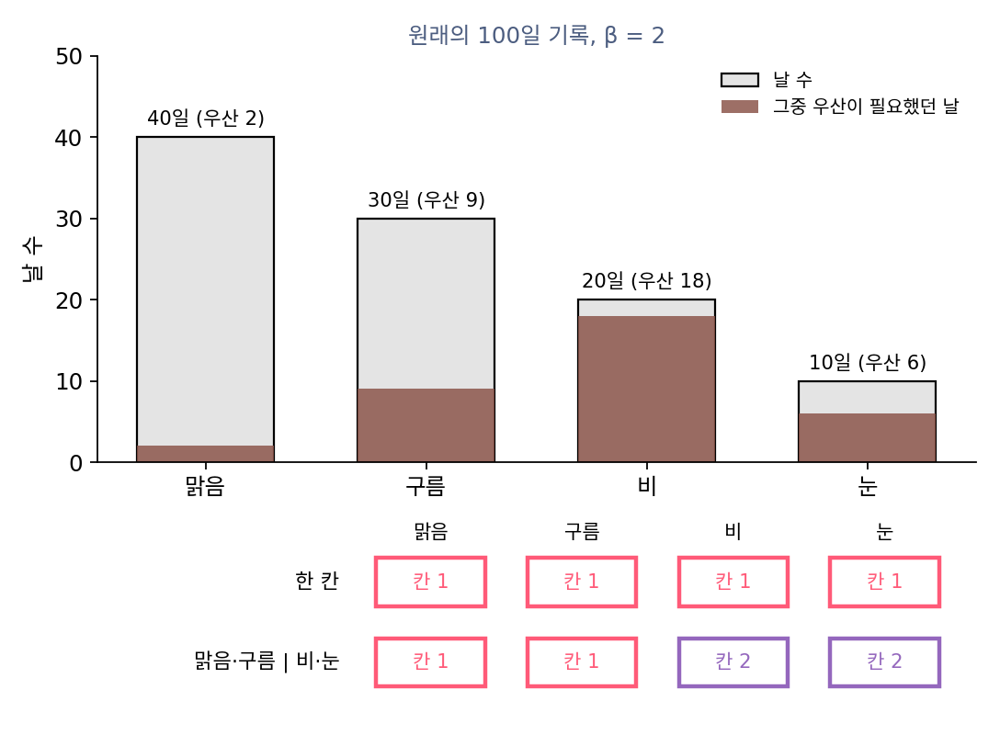
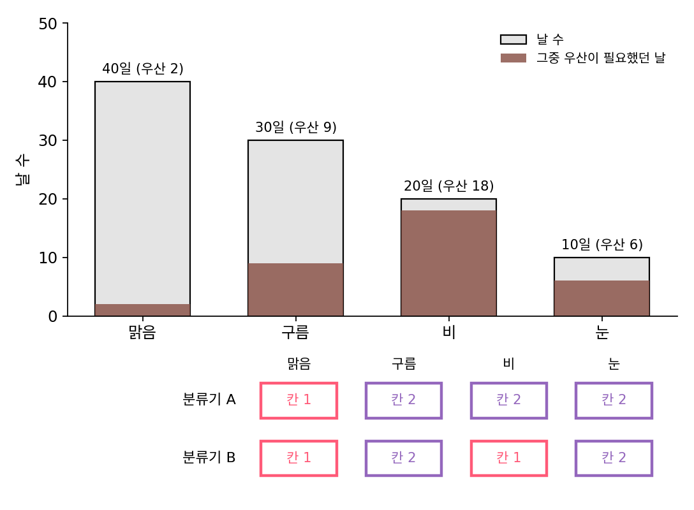

정보 병목: 왜곡을 잃은 라벨 정보로 재기
지금까지는 틀림을 제곱 오차로 쟀다. 그런데 아침에 날씨 앱을 여는 사람이 알고 싶은 것은 오늘의 기온이나 강수량 그 자체가 아니라 우산을 챙겨야 하는지다. 날씨 앱의 예보와 실제 날씨가 서로 얼마나 알려 주는지는, 예보를 보기 전과 본 뒤에 실제 날씨의 엔트로피가 평균으로 얼마나 줄어드는지를 재는 상호정보량으로 쟀다. 날씨를 짧게 줄여 전할 때, 우산 판단에 쓰이는 정보는 남기고 나머지는 버리는 압축을 레이트–디스토션의 말로 쓸 수 있을까? 그때 「왜곡」은 무엇이 될까?
역사: 「관련 있는 정보」를 재는 법
1999년, 히브리 대학의 티시비(Naftali Tishby), AT&T 섀넌 연구소의 페레이라(Fernando Pereira), NEC 연구소의 비알렉(William Bialek)은 앨러턴 학회에 「정보 병목 방법(The Information Bottleneck Method)」을 냈다. 학회 기록으로는 368–377쪽이고, 2000년 arXiv physics/0004057 에 다시 올렸다. 그들의 출발점은 레이트–디스토션 이론의 빈자리였다. 섀넌의 이론은 왜곡을 재는 함수를 미리 주어야 하는데, 말소리에서 무엇이 「중요한」 차이인지는 누가 정하는가? 그들은 예를 여럿 들었다. 말소리 파형에서 중요한 것은 말한 낱말이고, 받아 적은 글은 파형보다 엔트로피가 훨씬 낮다. 얼굴 사진에서 중요한 것은 그 사람의 이름이다.
그들의 답은 「중요함」을 다른 변수 하나로 정하는 것으로, 신호 X 의 관련 있는 정보란 X 가 다른 신호 Y 에 대해 가진 정보다. 그러면 할 일은 Y 에 대한 정보를 될 수 있는 대로 많이 지키면서 X 를 짧게 적는 코드를 찾는 일이 된다. 논문은 이것을 레이트–디스토션 이론을 넓힌 것으로 보았고, 답을 찾는 계산도 레이트–디스토션 함수를 구하는 블라후트(Richard Blahut)와 아리모토(Suguru Arimoto)의 1972년 되풀이 계산법을 넓혀 만들었다.


무엇이 중요한 차이인지 라벨이 정한다는 거, 분류기를 학습시켜 본 사람한테는 당연한 얘기 아니에요?

섀넌의 이론에서는 왜곡을 재는 함수를 미리 줘야 했어요. 말소리 파형 두 개의 제곱 오차가 아주 작으면, 두 소리는 같은 낱말일까요?

음… 꼭 그렇진 않겠네요. 파형이 조금만 달라도 다른 낱말일 수 있고, 목소리가 전혀 달라도 같은 낱말일 수 있으니까요.

그럼 낱말로 재면 되잖아요. 그런데 그러려면 파형과 낱말이 함께 나오는 분포를 알아야 하는데, 그걸 표로 적을 수는 없을 것 같아요.
그래요. 논문이 넓힌 블라후트–아리모토의 되풀이 계산도 그 결합 분포를 손에 쥐고 있어야 돌아가요. 신경망과 큰 자료로 두 상호정보량을 근사해 학습시킨 것은 2017년의 변분 정보 병목에 와서예요.

그러면 결합 분포를 손으로 적을 수 있을 만큼 작은 예라면, 정보 병목이 무엇을 남기고 무엇을 버리는지 직접 계산해 볼 수 있겠네요?
날씨 네 칸을 두 칸으로
어느 동네의 100일 기록이 이렇다고 하자(이 책이 지은 수).
| 날씨 X | 날 수 | 그중 우산이 필요했던 날 | 우산이 필요했던 비율 |
|---|---|---|---|
| 맑음 | 40 | 2 | 0.05 |
| 구름 | 30 | 9 | 0.30 |
| 비 | 20 | 18 | 0.90 |
| 눈 | 10 | 6 | 0.60 |
날씨 네 가지를 그대로 알리려면 날씨의 엔트로피 1.846비트가 든다. 「우산이 필요한가」라는 라벨 Y 에 대해 날씨가 알려 주는 정보는 I(X;Y) = 0.364비트다. 이번에는 날씨를 두 칸으로만 묶어 알린다고 하자. 묶은 칸 T 를 알리는 데는 칸 크기의 엔트로피 I(X;T) 만큼 들고, 받는 쪽에 남는 우산 정보는 I(T;Y) 다. 네 날씨를 두 칸으로 나누는 방법은 일곱 가지다(계산은 s4_ib.py).
| 묶음 T | 칸 크기 | 칸마다 우산 비율 | I(X;T) | I(T;Y) | 남은 우산 정보 |
|---|---|---|---|---|---|
| 맑음·구름 | 비·눈 | 0.7, 0.3 | 0.157, 0.800 | 0.881 | 0.278 | 76.4% |
| 비 | 맑음·구름·눈 | 0.2, 0.8 | 0.900, 0.212 | 0.722 | 0.243 | 66.8% |
| 맑음 | 구름·비·눈 | 0.4, 0.6 | 0.050, 0.550 | 0.971 | 0.224 | 61.5% |
| 맑음·눈 | 구름·비 | 0.5, 0.5 | 0.160, 0.540 | 1.000 | 0.119 | 32.7% |
| 눈 | 맑음·구름·비 | 0.1, 0.9 | 0.600, 0.322 | 0.469 | 0.021 | 5.7% |
| 구름 | 맑음·비·눈 | 0.3, 0.7 | 0.300, 0.371 | 0.881 | 0.003 | 0.9% |
| 맑음·비 | 구름·눈 | 0.6, 0.4 | 0.333, 0.375 | 0.971 | 0.001 | 0.4% |
「맑음·구름」과 「비·눈」으로 묶으면 0.881비트로 우산 정보의 76.4%를 남긴다. 날씨를 그대로 알리는 데 드는 1.846비트의 절반도 안 되는 비트다. 표를 위아래로 훑어보면 쓰는 비트가 같은데 남긴 우산 정보는 크게 다른 묶음들도 눈에 띈다.
레이트–디스토션의 말로 옮기면 이렇다. 왜곡은 「묶느라 잃은 우산 정보」 I(X;Y) − I(T;Y) 이고, 레이트는 I(X;T) 다. 둘을 계수 β 로 맞바꿔 한 목표로 쓰면 다음과 같다. X 를 압축한 T 가 라벨 Y 에 대한 정보는 남기고 X 에 대한 나머지 정보는 버리도록 고르는 이 방법을 정보 병목 (라벨 정보를 남기며 입력 정보를 줄이는 압축, information bottleneck)이라 한다. 입력의 정보가 좁은 병목 T 를 지나야 라벨에 닿는다는 그림에서 나온 이름이다.
β 마다 목표를 가장 작게 하는 규칙을 블라후트–아리모토 방식의 되풀이 계산으로 찾아 (I(X;T), I(T;Y)) 평면에 찍으면 경계 곡선이 나온다. β 가 2 이하이면 모든 날씨를 한 칸에 넣는 것이 답이고(아무것도 알리지 않음), β = 3 에서 「맑음·구름」과 「비·눈」을 가르는 묶음으로 처음 갈라진다. β 가 커질수록 칸이 늘어나고, β = 100 쯤에서 네 날씨를 모두 따로 두어 I(T;Y) = 0.364 에 닿는다. 곡선 위 한 점에서의 기울기는 1/β 다. β 는 「우산 정보 1비트를 더 얻으려고 날씨 정보를 몇 비트까지 더 쓸 용의가 있나」를 말한다.

경계 곡선이 점선 I(X;Y) = 0.364 를 넘지 못하는 것은 우연이 아니다. T 는 X 만 보고 만들었으므로, X 가 Y 에 대해 모르는 것을 T 가 알 수는 없다(가공해서 정보가 늘지 않는다는 정보 처리 부등식). β 를 한없이 키우면 라벨 정보를 하나도 잃지 않는 가장 짧은 T 를 찾게 되는데, 그것이 라벨에 대한 최소 충분통계량이다.
ML에서: 분류기의 중간 표현을 병목으로
분류 신경망의 중간 층 출력을 T 로 보면, 정보 병목은 「라벨을 맞히는 데 필요한 것만 남긴 표현」을 학습의 목표로 삼으라고 말한다. 알레미(Alexander A. Alemi)·피셔(Ian Fischer)·딜런(Joshua V. Dillon)·머피(Kevin Murphy)의 「Deep Variational Information Bottleneck」(ICLR 2017)은 직접 계산하기 어려운 두 상호정보량을 계산할 수 있는 위·아래 한계로 바꾸는 변분 근사를 썼다. 그리고 재파라미터화 기법(노이즈를 따로 뽑아 샘플을 신경망 출력의 매끄러운 식으로 만들어 그래디언트를 흘려보내는 방법)으로 신경망을 학습시킬 수 있게 했다. 그들은 이 목표로 학습한 모델이 다른 정칙화로 학습한 모델보다 일반화가 좋고 적대적 공격에도 더 잘 버틴다고 보고했다. 그림과 그 설명글처럼 한 쌍으로 묶인 두 변수의 상호정보량을 키우는 대조 학습도 같은 상호정보량을 다른 쪽에서 쓴다.
문제 7. 우산이 날씨로 완전히 정해지면
위 동네에서 기록을 다시 보니, 비나 눈이 온 날은 늘 우산이 필요했고 맑거나 구름 낀 날은 한 번도 필요하지 않았다고 하자(날 수는 그대로 40, 30, 20, 10일). (가) 날씨가 우산에 대해 알려 주는 정보 I(X;Y) 는? (나) 「맑음·구름 | 비·눈」 두 칸으로 묶으면 I(X;T) 와 I(T;Y) 는? (다) 이 묶음보다 더 짧게 적으면서 우산 정보를 모두 지키는 묶음이 있는가? (위젯 2의 「비·눈이면 늘 우산」으로 확인해 보자.)

우산이 필요한 날이 30일이니까 Y 의 엔트로피는 −0.3 log₂ 0.3 − 0.7 log₂ 0.7 = 0.881비트예요. 날씨를 알면 우산은 확실하니까 I(X;Y) 도 0.881.
(나)는 칸 크기가 0.7, 0.3 이니까 I(X;T) 도 0.881 이고, 칸을 알면 우산이 확실하니까 I(T;Y) 도 0.881. 셋이 다 같아.
날씨를 그대로 알리면 1.846비트인데 0.881비트로 줄이고도 잃은 게 없네요. (다)는요?
한 칸으로 묶으면 0비트지만 우산 정보도 0이고… 우산 정보를 다 지키려면 우산이 필요한 날과 아닌 날은 꼭 다른 칸에 있어야 하니까, 칸이 적어도 둘이에요. 그럼 0.881 보다 짧을 수가 없네요.
라벨이 날씨로 완전히 정해지면 그 라벨 자체가 가장 짧은 충분한 요약이에요. 정보 병목이 찾는 게 결국 「라벨을 정하는 데 필요한 만큼만」이라는 거네요.

출석 확인할 때 조교가 학생 얼굴이나 옷까지 기록할 필요는 없고 「왔다 / 안 왔다」만 적으면 되잖아요. 출석부 칸이 우산 칸이랑 같아요.
위젯 2에서 이 기록을 불러와 「맑음·구름 | 비·눈」과 「한 칸」을 번갈아 놓고 두 정보량을 견줘 보세요.

문제 8. β 가 작으면 왜 아무것도 알리지 않을까
원래의 100일 기록(우산 2, 9, 18, 6일)으로 돌아가자. (가) β = 2 에서는 정보 병목의 답이 모든 날씨를 한 칸에 넣는 것이었다. 「맑음·구름 | 비·눈」 두 칸 묶음으로 목표 값 I(X;T) − βI(T;Y) 를 계산해 한 칸과 견줘라. (나) β 를 아무리 키워도 I(T;Y) 가 0.364 를 넘지 못하는 것은 왜인가? (다) 라벨 Y 자리에 날씨 X 자신을 넣으면 정보 병목은 무엇이 되는가?

두 칸 묶음은 0.881 − 2 × 0.278 = 0.325 이고 한 칸은 0 − 0 = 0 이니까, 목표를 가장 작게 하는 건 한 칸이네요. 그런데 이상해요. 두 칸이 우산 정보를 그렇게 많이 남기는데 왜 안 써요?
β = 2 는 「우산 정보 1비트는 날씨 정보 2비트 값어치」라는 뜻이었죠. 두 칸 묶음은 우산 정보 1비트를 얻으려고 날씨 정보를 몇 비트 쓰고 있나요?
0.881 ÷ 0.278 = 3.17비트예요. 2비트까지만 낼 용의가 있는데 3.17비트를 달라고 하니 안 사는 거예요.
β = 3 이면요?

두 칸 묶음 목표 값이 0.881 − 3 × 0.278 = 0.046 으로 아직 0 보다 커요. 어, 그럼 3에서도 안 갈라져야 하는데… 본문에서는 갈라졌잖아요.
본문의 답은 날씨를 칸에 어떻게 넣었죠?
아, 확률로 나눠 넣었어요. 그렇게 넣으면 목표 값이 처음으로 0 밑으로 내려가서 갈라지기 시작한 거네요.

아, 그래서 β 가 2 에서 3 사이 어딘가에서 갑자기 갈라지는 거군요. 맞바꿈 비율이 문턱을 넘어야 첫 칸이 생겨요.

그래요. (나)는요?
T 는 날씨만 보고 정하니까, 날씨가 우산에 대해 아는 0.364 보다 더 알 수는 없어요. 정보 처리 부등식이요.
(다)는요? Y 자리에 X 를 넣으면 목표가 어떻게 되죠?
I(T;Y) 가 I(X;T) 와 같아지니까… 목표가 (1 − β)I(X;T) 예요.
그럼 β 에 따라 어떻게 돼?
β 가 1 보다 크면 날씨를 다 적고, 작으면 하나도 안 적어. 그 사이가 없네. 라벨이 따로 있어야 무엇을 버릴지 고를 수 있는 거야.

선형계획법에서 가격이 문턱을 넘는 순간 답이 꼭짓점 하나에서 다른 꼭짓점으로 뛰던 것과 비슷해요.
문제 9. 같은 비트, 다른 쓸모
날씨 사진을 받아 「우산이 필요한가」를 맞히는 분류기 두 개가 있는데, 둘 다 중간 층에서 사진을 두 칸 가운데 하나로 보낸다. 분류기 A 의 두 칸은 「맑음 | 구름·비·눈」, 분류기 B 의 두 칸은 「맑음·비 | 구름·눈」 이다(날 수와 우산 비율은 원래의 100일 기록). (가) 두 분류기의 중간 표현은 입력에 대해 몇 비트를 가지고 있는가? (나) 라벨에 대해서는? (다) 「중간 표현이 입력을 얼마나 압축했나」만 보고 두 분류기의 좋고 나쁨을 말할 수 있는가?

둘 다 칸 크기가 0.4, 0.6 이니까 I(X;T) = 0.971비트로 같아요. 같은 만큼 압축했으니 비슷한 분류기겠죠.
라벨 정보도 재 봐요.

A 는 0.224, B 는 0.001 이에요. B 는 압축은 똑같이 했는데 우산에 대해서는 거의 아무것도 몰라요.
B 는 맑음과 비를 한 칸에 넣었으니까, 칸을 알아도 우산을 판단할 수 없어. 사진의 밝기나 배경처럼 라벨과 상관없는 것으로 가른 거나 마찬가지야.
그래요. I(X;T) 하나는 표현이 얼마나 짧은지만 말해요. 무엇을 남겼는지는 I(T;Y) 를 함께 봐야 알 수 있어요.

그러면 「학습하면 중간 층이 입력을 압축한다」는 말을 들었을 때도, 압축된 양만으로는 그 층이 쓸모 있는지 알 수 없겠네요. 정보 평면 두 축을 다 봐야 해요.
요약 과제에서 분량만 반으로 줄였다고 좋은 요약은 아니잖아요. 교수님이 물어볼 내용을 남겼는지가 중요하죠.